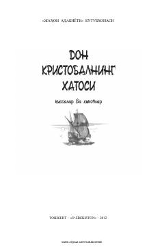

DKTurli xalqlar adiblari qalamiga mansub falsafiy mazmundagi qissa va hikoyalar to'plami.
Ushbu to'plam turli mamlakat yozuvchilarining insoniylik, o'z-o'zini anglash va kelajak haqidagi mushohadalariga boy qissa va hikoyalarini o'z ichiga oladi. Asarlar insoniyat taqdiri, jamiyat taraqqiyoti va o'zaro munosabatlarning murakkab jihatlarini falsafiy nuqtai nazardan yoritib beradi.